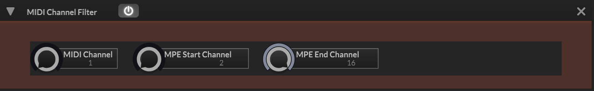

MIDI Channel Filter

Filters incoming MIDI messages by channel. In standard mode, only messages matching the channelNumber parameter are passed through. In MPE mode (detected automatically from the global MPE state), messages are accepted if their channel falls within the mpeStart to mpeEnd range, with MIDI channel 1 (the MPE master channel) always allowed.
Non-matching messages are not destroyed - they are flagged via Message.ignoreEvent(true) so downstream processors skip them. This is implemented as a HardcodedScriptProcessor (C++ class with scripting-style callbacks). All three MIDI event types (note-on, note-off, controller) use identical filtering logic.
Signal Path
Parameters
| Parameter | Description | Range | Default |
|---|---|---|---|
| Standard Mode | |||
| channelNumber | MIDI channel to pass when MPE is disabled | 1 - 16 | 1 |
| MPE Mode | |||
| mpeStart | Start channel for the MPE note range (channel 1 is always allowed as master) | 2 - 16 | 2 |
| mpeEnd | End channel for the MPE note range | 2 - 16 | 16 |
Notes
MPE mode is not a user-facing toggle - it is driven by the global MidiControllerAutomationHandler MPE listener. When MPE is enabled globally, the filter automatically switches from single-channel to range-based matching.
In MPE mode, the allowed channels are stored as a BigInteger bitmask built from the mpeStart/mpeEnd range. Channel 1 (the MPE master channel) is always set in the bitmask regardless of the range parameters.
Ignored messages remain in the event buffer - they are simply flagged so that downstream processors (sound generators, modulators) skip them. This means you can place multiple ChannelFilter processors in a chain to route different channels to different instrument paths.